John William Cowell 1894 - c1978
[ Home ] | [ Calendar ] | [ Surnames Index ] | [ Family History ]A police constable and the son of Henry Cowell (a shepherd) and Charlotte Mullen, John Cowell, the second cousin twice-removed on the mother's side of <a href="I1.html">Nigel Horne</a>, was born in Ash, Kent, England on Feb 25, 1894<span class="citation">1,2,3,4,5</span> and baptized in East Malling, Kent, England on May 27, 1894. He married Daisy Morgan there at St James, on Dec 25, 1917<span class="citation">7</span>.</p><p>John spent all of his life in Kent, England. Throughout his life, he lived in several places around the county: in Larkfield, Kent, England on Mar 31, 1901<span class="citation">8</span>; at 3 Illogan Terrace in Larkfield on Apr 2, 1911<span class="citation">9</span>; on New Hythe Lane in Larkfield in 1915<span class="citation">4</span>; and at 50 Sandling Lane, Maidstone on Sep 29, 1939<span class="citation">3</span>. He served in the army from Apr 16, 1915 to Feb 1, 1919 in Abbeville, Oise, Picardie, France (<em>regiment: Grenadier Guards; Service number: 23715 Gun shot wound to right leg 1 Aug 1917</em>).<p>He died <i>c.</i> Nov 1978 in Maidstone, Kent<span class="citation">6</span>.
Parents
- Henry John was born on Nov 26, 1867
- Charlotte was born c. 1855
Citations
- 1901 England Census Online publication - Provo, UT, USA: The Generations Network, Inc., 2005.Original data - Census Returns of England and Wales, 1901. Kew, Surrey, England: The National Archives of the UK (TNA): Public Record Office (PRO), 1901. Data imaged from the National
- 1911 England Census Online publication - Provo, UT, USA: Ancestry.com Operations, Inc., 2011.Original data - Census Returns of England and Wales, 1911. Kew, Surrey, England: The National Archives of the UK (TNA), 1911. Data imaged from the National Archives, London, England.
- 1939 Register - Findmypast (was the head of the household)
- British Army Service Records - Findmypast
- Kent Baptisms - Findmypast
- England & Wales deaths 1837-2007 - Findmypast
- England & Wales Marriages 1837-2005 - Findmypast
- 1901 England, Wales & Scotland Census - Findmypast (was age 7 and the son of the head of the household)
- 1911 Census for England & Wales - Findmypast (was age 17 and the son of the head of the household)
Media
John William Cowell - Military Record 1
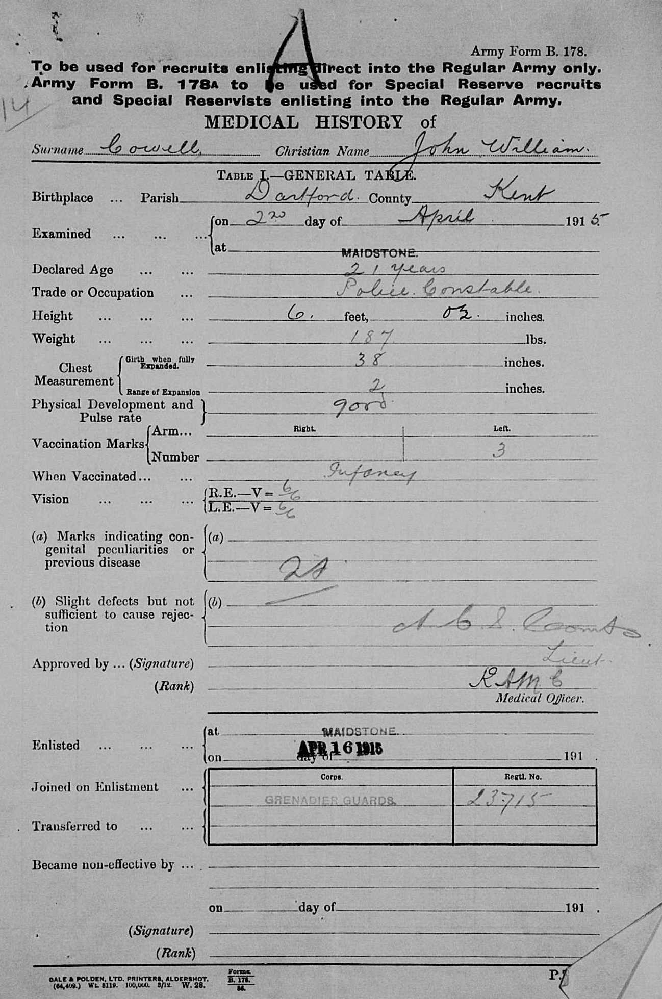
John William Cowell - Military Record 2
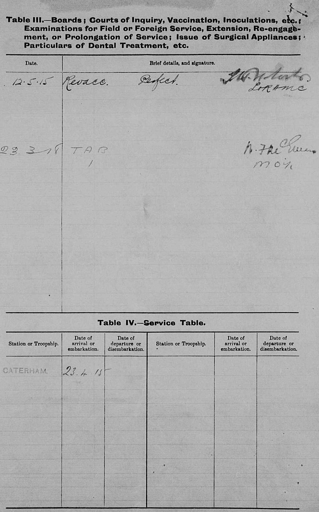
John William Cowell - Military Record 3
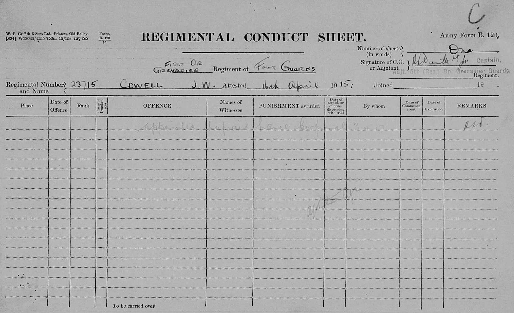
John William Cowell - Military Record 4
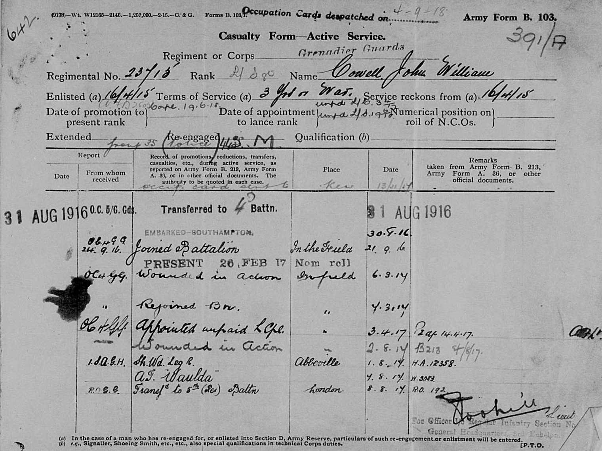
John William Cowell - Military Record 5
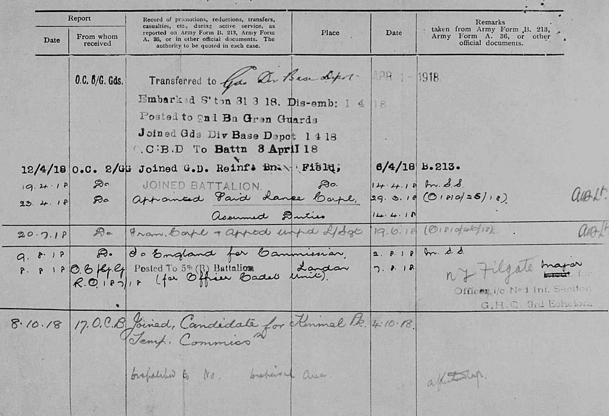
John William Cowell - Military Record 6
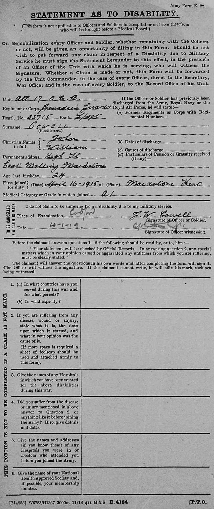
John William Cowell - Military Record 7

John William Cowell - Military Record 8
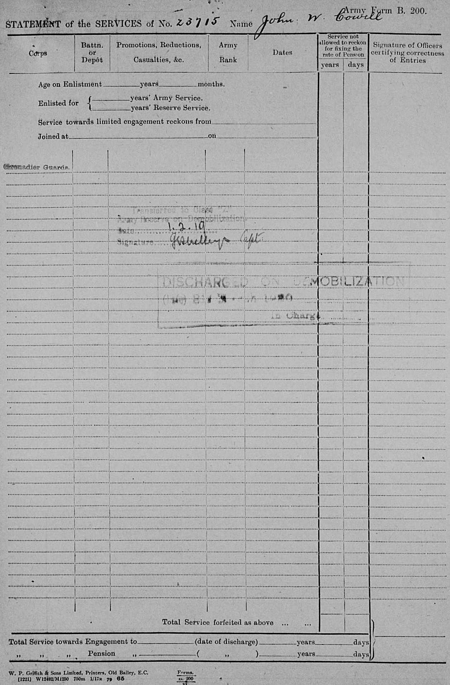
John William Cowell - Military Record 9
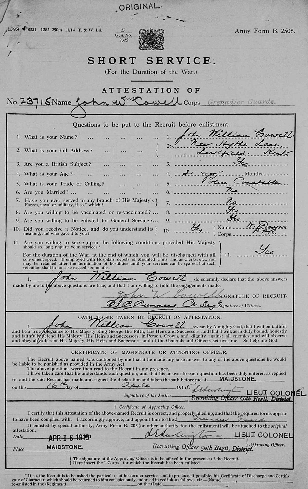
John William Cowell - Military Record 10
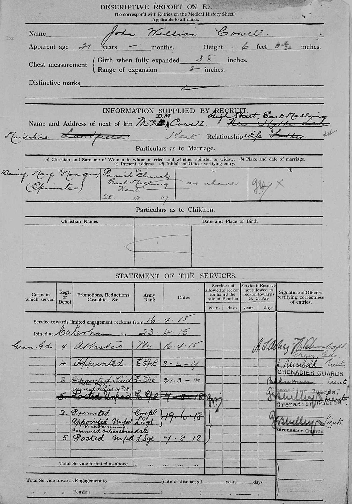
John William Cowell - Military Record 11
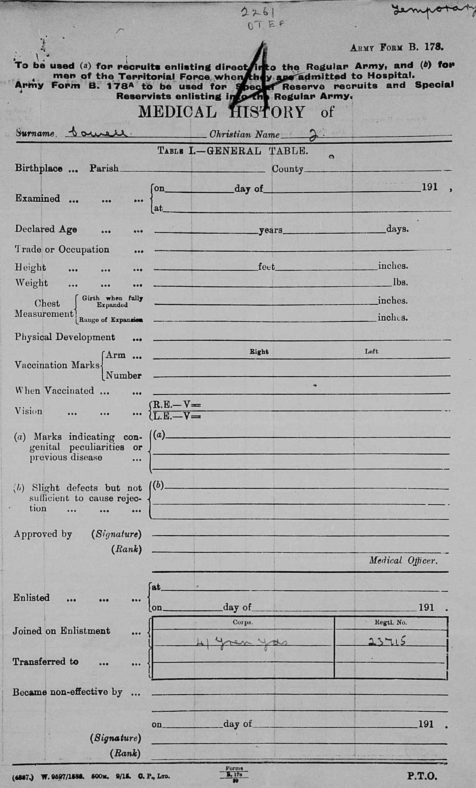
John William Cowell - Military Record 12a
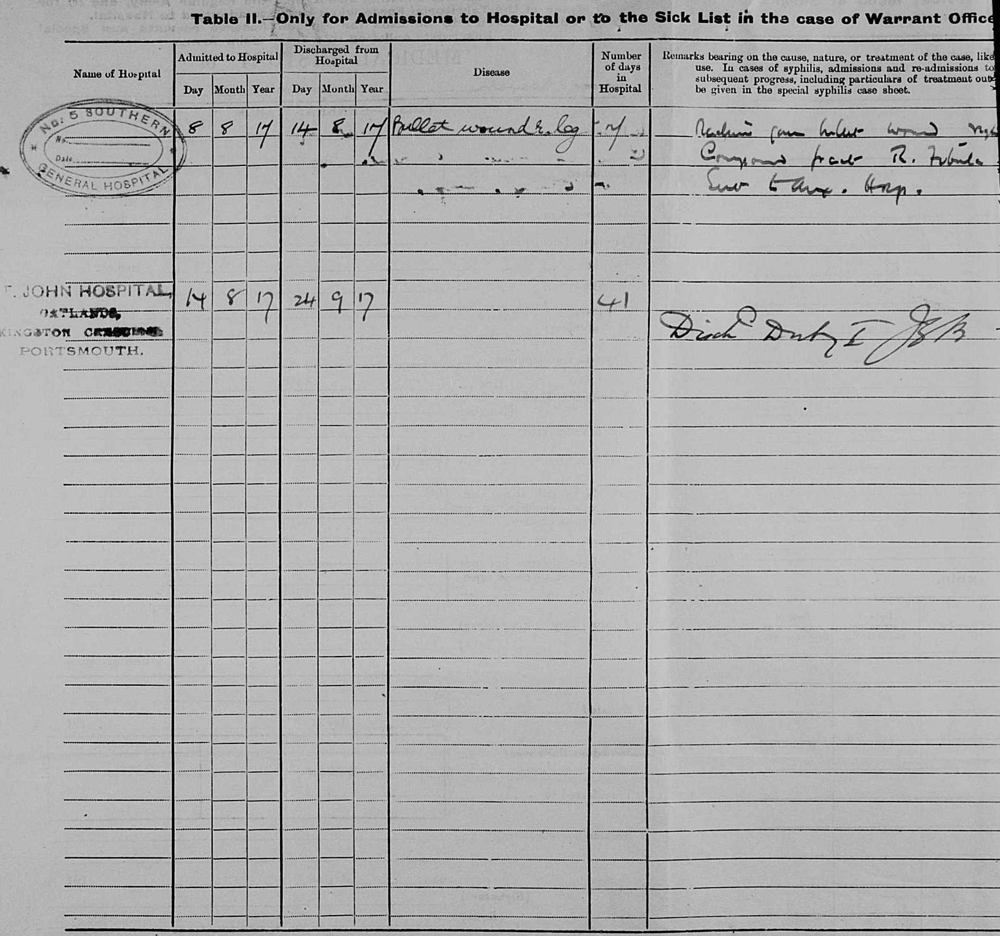
John William Cowell - Military Record 12b
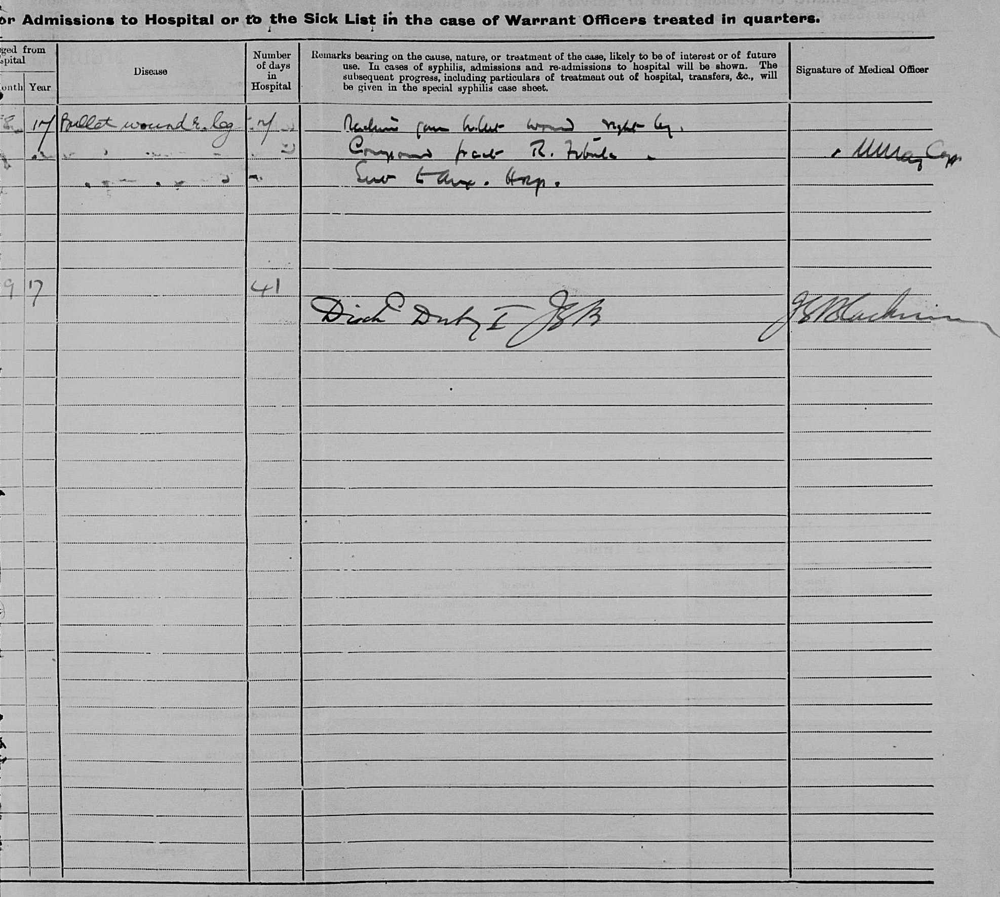
John William Cowell - Military Record 13
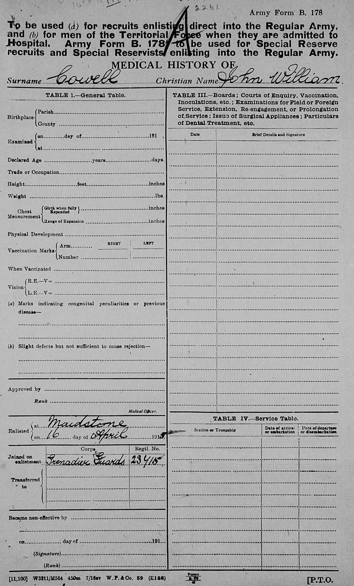
Kent Baptisms - GBPRS/B/82130394/1
1939 Register - TNA/R39/1744/1744D/005/38
England & Wales births 1837-2006 - BMD/B/1894/1/AZ/000130/035
England & Wales deaths 1837-2007 - BMD/D/1978/4/AZ/000226/052
England Births & Baptisms 1538-1975 - R_885449548
England & Wales marriages 1837-2005 - BMD/M/1917/4/AZ/000228/065
1911 Census For England & Wales - GBC-1911-RG14-03970-0235-3
British Army Service Records - GBM/WO363-4/7266697/120/1674
Kent marriages and banns - PRS/KENT/MAR/0089002/1
Kent Baptisms - PRS/KENT/BAP/0378894
Kent marriages and banns - PRS/KENT/MAR/0315594/1
Family Tree
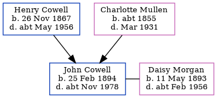Generated by Ged2Site. Last updated on Jul 20, 2025